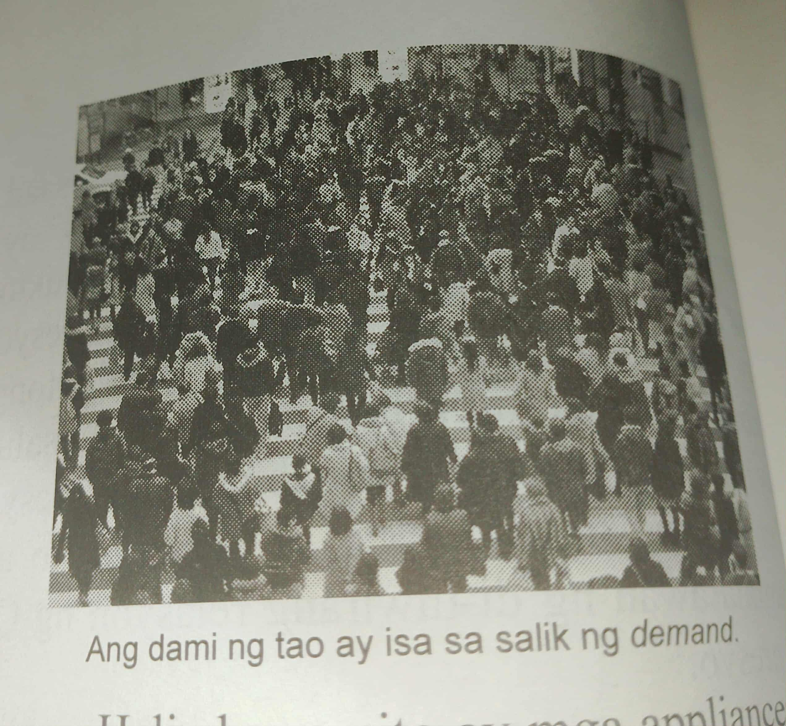
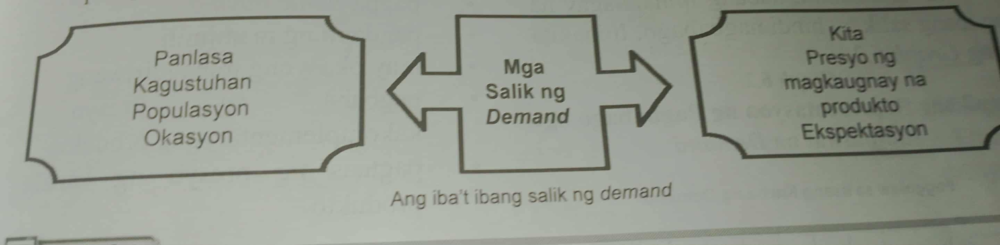

Ang presyong ekwilibriyo ay ang lebel ng presyo na umiiral sa pamilihan upang maganap ang bilihan sa pagitang ng mamimili at prodyuser
Ang salapi na tinanggap ng tao kapalit ng ginawang produkto at serbisyo ay tinatawag na kita. Ito ang basehan ng pagtatakda ng badyet sa pamilya
Ang populasyon ay potential market ng isang bansa
Mayroong tinatawag na substitue goods o mga produkto na pamalit sa ginagamit na mga prdukto at ang complimentary goods o mga produkto na kinukonsumo ng sabay
Sa kultura ng ating bansa likas sa ating mga Pilipino ang ipagdiwang ang iba't ibang okasyon na dumarating
Sa panahon ngayon maraming kalamidad ang nangyayari sa iba't ibang panig ng daigdig at sa ating bansa, may kaguluhan at digmaan sa pagitan ng mga bansa. Dahil sa mga sitwasyong ito ang mga mamimili ay nagpapanic-buying
 